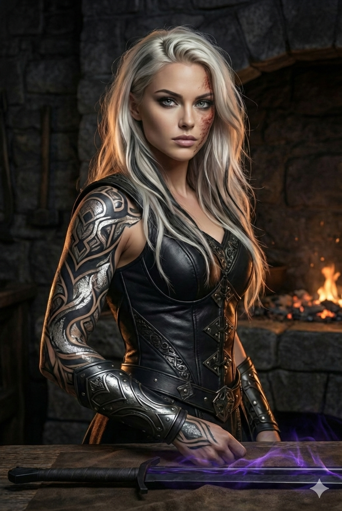
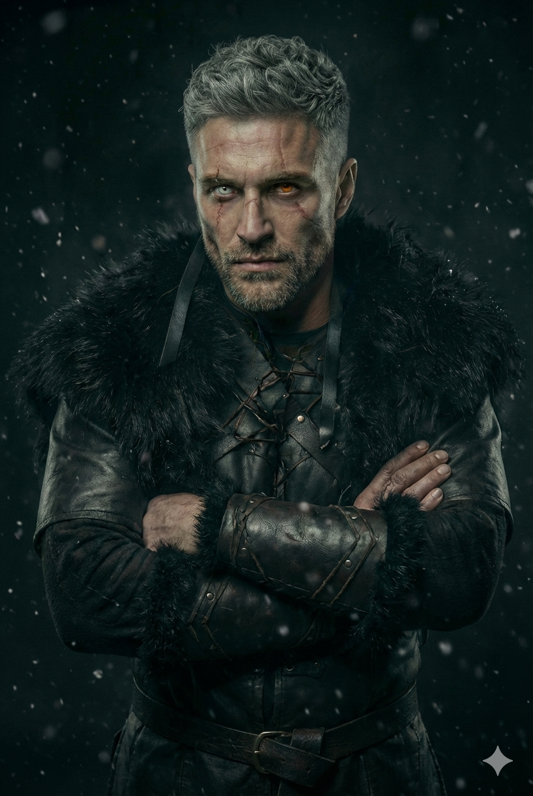
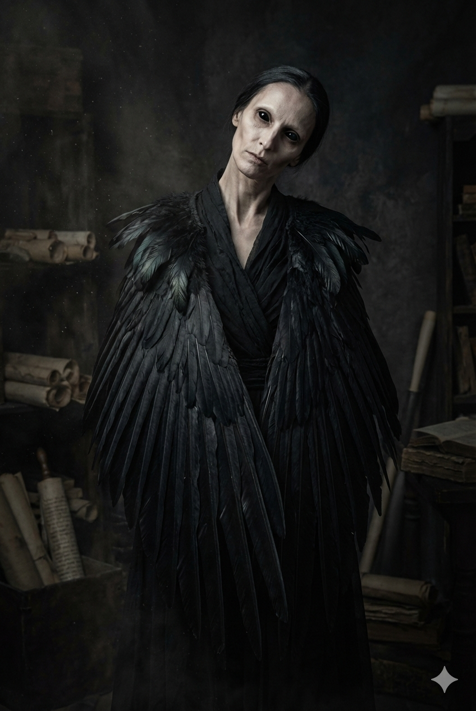
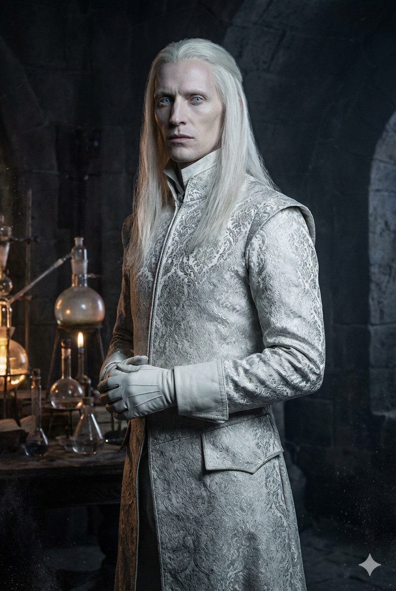

Він — камінь, об який я розіб'юся. Я — вогонь, у якому він згорить.
Рік. Триста шістдесят п'ять днів я йшла по слідах, які хтось лишав для мене навмисне. Хтось терплячий. Хтось розумний. Хтось, хто дуже хотів, щоб я йшла не туди.
Я все одно прийшла.
У них тут гора замість фортеці, лорд замість серця і в'язниця, з якої не виходять. У них тут усе продумано.
Вони просто не врахували коваля.
Він зустрів мене, як зустрічають проблему: спокійно, згори, без поспіху. Один дотик — і в мене всередині хитнулося те, що не хиталося сім років.
Це не мало статися. Тим гірше для нас обох.
Він думає, що спалить світ за мене. Він ще не зрозумів, що я спалю світ за нього першою.
Тропи
Чого чекати
Enemies to Lovers
Arranged Marriage
Forced Proximity
Slow Burn
Зміст
Глави
36 глав і Епілог — повна книга. Приємного читання.
Головна героїня · Пантера · Коваль і асасин Руки Морна
↓

Зовнішність
Платинове волосся нижче лопаток із наскрізними чорно-графітовими пасмами — під магією сріблиться, ловить світло як метал. Холодні сталево-сірі очі. Фактура коваля, не танцівниці: широкі плечі, розвинені передпліччя, суха жилава сила — «пружина». Права рука від плеча до кисті — татуювання-капацитор: переплетені вени, вписані в древні символи; світиться сріблом на межі магії.
Характер
Сталь. Ніколи не прогинається, не просить дозволу. Іронія замість патетики, технічна лексика як мова емоцій. Виковала не лише зброю — виковала себе.
Магія
Голос Сталі — чує метал, його напруги і приховані тріщини, кує волею. Жар Крові — вогонь у крові, живе тепло, що гріє метал зсередини.
А
Арктур Валеріус
Головний герой · Ведмідь · Лорд-Вартовий Скальсгарда
↓
Зовнішність
Дуже високий, монументальний — ведмежа маса без огрядності, важкі плечі, шия борця. Темно-каштанове довге волосся з мідними відблисками, зачесане назад; коротка борода. Янтарні очі зі спалахом золота — світяться тьмяно й рівно, «як вугілля, що ніколи повністю не гасне». Глибокий шрам на вилиці.
Характер
Нерухомість замість шкіри. Економні рухи — жодного зайвого. Несе тягар цілої Півночі й давно перестав рахувати, скільки. Присутність фізично тисне навіть без магії.
Магія
Гравітація і Камінь — лінія Гори-Матері. Притискає, утримує, руйнує. Вага як воля.
К
Кай
Пантера · Старший брат Реї · Емпат
↓
Зовнішність
Високий, широкоплечий від природи. Темне волосся — родова «інша половина» проти платини сестри. Сірі очі, як у Реї, але тепліші тоном.
Характер
Тепло і сталь роду. Голос розуму там, де Рея — зброя. Той, хто виніс малу сестру з вогню на спині — і не відвернувся ніколи.
Магія
Емпатія — лінія Живиці. Відчуває і передає емоції; чужий біль для нього фізичний.
Ф
Фенрік Вал-Орн
Полярний Вовк · Командир розвідки · Ікло Ради
↓

Зовнішність
Високий, сухий, жилавий — вовча легкість проти ведмежої маси. Сріблясте коротке волосся, сива щетина. Гетерохромія: ліве око молочно-біле — сліпе на вигляд, насправді бачить аури й теплові сліди; праве — блідо-фіолетове. Тонкі шрами через брову й вилицю.
Характер
Сухий гумор і найгірший таймінг в історії Півночі. Найкращий друг Арктура. Знає більше, ніж каже — і це його режим за замовчуванням.
Б
Бйорн
Ведмідь · Капітан гвардії
↓
Зовнішність
Найбільша фізична маса в Цитаделі — вищий і ширший за Арктура, справжня ведмежа туша, шия й плечі борця. Коротке сиве волосся майже під машинку. Обличчя, побите вітром і роками. Карбовані ведмежі голови на наплічниках — знак капітана гвардії.
Характер
Прагматик до кістки: «думати красиво не вмію». Рухається як таран, говорить прямо. Міст між гвардією і тими, кому вона служить.
В
Веспер
Авіанка-Ворона · Збирачка інформації
↓

Зовнішність
Дуже висока, худа, кістлява; довга шия, рухи різкі, пташині — повертає голову всім корпусом. Суцільно чорні очі без білків — вологі, нерухомі; люди уникають дивитися в них. Плащ із живого чорного пір'я від плечей до підлоги. Під високим коміром — шов і металеві пластини: перероблене горло, звідси металевий призвук голосу.
Характер
«Я рахую повільно і до кінця». Нічого безкоштовно. Механічні ворони ювелірної роботи — її очі й голоси по всьому світу.
М
Марта
Господиня харчевні
↓
Зовнішність
Невисока, кремезна, передпліччя борчині. Темне волосся з сивиною під косинкою. Опіки від пари на руках, борошно на фартусі. Карі очі — теплі й чіпкі водночас.
Характер
Тепло, дім і буденність у місті з каменю та сталі. Єдина в горі, хто бере з Лорда гроші — бо пам'ятає його ще підмайстром, що брав добавку двічі.
С
Сігне
Учениця школи ковалів · ~9 років
↓
Зовнішність
Мала, худа, гостра. Русява коса, замотана під шкіряний очіпок — щоб не спалити. Сажа на щоках, завеликі рукавиці.
Характер
Вперта понад свій зріст. «Ви казали — метал завжди рухається. Я хочу чути куди. Вчіть».
З
Загін
Гвардія Скальсгарда
↓
Торвальд
Каштановий їжачок, шрам через брову. Середній зріст, кремезний.
Ерік
Рудуватий, широкий як шафа, добродушне обличчя. Руки плавильника в опіках — з нічної зміни Ями.
Лейф
Наймолодший — світлий пух на щоках, довготелесий, худий.
Хальдер
Сержант другої чоти. Темне волосся з сивиною, сержантська виправка, стара травма плеча.
Г
Гуннар
Печерний Ведмідь · Ікло Ради · Антагоніст
↓

Зовнішність
Високий, трохи масивніший за Арктура — важка кістка Печерного Ведмедя без ведмежої м'ясистості. Білясте-платинове волосся, абсолютно пряме, зачесане назад. Світло-блакитні очі, майже прозорі — «як лід на мілкому». Біла шкіра істоти, що поколіннями не бачила сонця. Білі шкіряні рукавички — майже завжди. Серед чорного каменю Скальсгарда він єдина світла пляма — і це моторошно.
Характер
Вчений над мораллю. Не фанатик і не месник — світ для нього лабораторія, люди — змінні. Стерильний, розважливий, ввічливий; ніколи не поспішає і не ображається. Мораль винесена за дужки не зі злоби — вона просто «не входить у таблиці».
Система
Магія Аверії
Головний закон світу: більше сили — більша ціна. Кожна магія бере плату з тіла або душі носія. Безкоштовної сили немає.
⚒️
Голос Сталі
Рея · лінія Ковача
Як працюєЧує метал на відстані — його склад, напруги, приховані тріщини і «почерк» майстра, що кував. Гріє, гне, зварює і рве метал волею.
МежаДіє лише на метал — проти каменю чи плоті безсилий сам по собі.
🔥
Жар Крові
Рея · лінія Ковача
Як працюєВогонь у крові. Розпалює без кресала, гріє метал зсередини себе, підіймає температуру дотиком і волею.
УнікальністьЄдина, хто може кувати Зоряну Кров — метеоритну сталь, що реагує лише на живий вогонь.
🪨
Гравітація і Камінь
Арктур · лінія Гори-Матері
Як працюєГравітаційне поле — притискає ворогів, створює ударні хвилі, змінює тиск у просторі. Вага як воля.
МасштабВід точкового контролю до Абсолютної Гравітації — останнього резерву.
🌿
Емпатія
Кай · лінія Живиці
Як працюєВідчуває і передає емоції. Чужий біль для носія фізичний — аж до нудоти.
ЦінаНеможливість відвернутися. Кожна людина навколо болить тобі особисто.
Іржа
Іржа — не просто хвороба. Це зброя.
Вона поширюється крізь плоть непомітно: спочатку чорніють вени, потім некроз повзе далі — і розум починає гаснути разом із тілом. Ті, кого вона поглинає повністю, вже не люди. Вони — Спотворені: живі, але порожні, керовані лише інстинктом руйнування.
Хтось створив цей вірус навмисно. Хтось досі його використовує. І єдине, чого ще не знає ніхто, — це масштаб наміру.
Географія
Чотири сторони Аверії
Північ
Залізний Бастіон
Ведмеді · Вовки · Вепри
Скальсгард — столиця в горіГорн — промислове місто біля вулканаТангард — хребет і прикордонний гарнізонСірі Пустки — мертва смуга перед кордоном
Південь
Смарагдовий Домініон
Пантери · Леви · Рисі й Оцелоти
Велір — столиця на воді, місто розкошіСейбл — тіньовий порт, чорний ринокМісячна Чаша — сакральна долина трав
Захід
Глибочінь
Акули · Восьминоги · Кракени
Біссос — підводна столиця під куполомРиф — плавуче піратське місто
Схід
Високе Небо
Орли · Яструби · Ворони
Зеніт — столиця на літаючих островахЕхо — місто-архів у каньйоні
Кожен домініон тримає власний важіль влади: Північ — військову міць і метал, Південь — економіку, їжу та ліки, Захід — морські шляхи, Схід — інформацію. Жоден не самодостатній — на цій взаємозалежності стоїть уся політика Аверії.
Локація
Скальсгард — Цитадель Кісток
Місто-завод висічене в чорному серці гори. Будинки-сталактити, ланцюгові мости, акведуки з розплавленим металом. Вічні сутінки. Гуркіт молотів і скрегіт підйомників. Запах сірки, вугілля і сталі.
🔴
Яма
Плавильня. Найнижчий рівень. Пекло і спека.
⚫
Безодня
В'язниця. Антимагічні плити. Вакуумна тиша.
🔥
Королівська Кузня
Майстри зброярі. Тут працює Рея.
🏠
Житловий рівень
Гвардія, слуги, цілителі.
👑
Резиденція Лорда
Покої Арктура, бібліотека, зала Ради.
🏔
Стіни і Вежі
Патруль. Вид на Долину Скелетів.
Міфологія
Пантеон Стихій
Верховного бога немає — пантеон рівний. Кожен домініон шанує своїх, але молитви перетинають кордони так само легко, як каравани. Магія смертних — іскри божественного вогню в крові.
⚒
Ковач — Батько Горна
Вогонь · Метал · Творення · Ковальство
↓
Образ
Ковтель без обличчя, молот із зорі. Спільний бог Півночі й Півдня — єдиний, кого шанують по обидва боки кордону.
Дарує
Голос Сталі, Жар Крові. За переказами, викував перших смертних з іскри й руди — тому в кожному є трохи вогню й каменю.
⛰
Гора-Мати · Каменосна
Камінь · Вага · Надра · Терпіння
↓
Образ
Спляча жінка-гора. Богиня Півночі — та, що вчить витримувати темряву й тримати вагу, яку ніхто інший не підніме.
Дарує
Гравітацію, витривалість Ведмедів, силу тих, хто не відступає.
🌊
Глибинна · Мати Припливів
Вода · Море · Таємниця · Пам'ять
↓
Образ
Безлика хвиля з перловими очима. Богиня Заходу — та, що пам'ятає все, що коли-небудь торкалося води.
Дарує
Водну магію Акул і Кракенів, знання глибин, які краще не тривожити.
👁
Небовидець · Всевидько
Повітря · Вітер · Зір · Звістка
↓
Образ
Око в колі вітрів. Бог Сходу — той, хто бачить усе і продає побачене тим, хто платить.
Дарує
Політ авіанів, «очі світу». Його малі духи — Свічада — живуть у дзеркалах і кризі.
🌿
Живиця
Життя · Трави · Зцілення · Родючість
↓
Образ
Жінка з корінням замість волосся, з якого точиться цілюща смола. Богиня Півдня — та, що годує і гоїть.
Дарує
Зцілення, емпатію, дари землі. Місячна Чаша — її сакральне місце; Смараги, змієподібні сторожі долини, — її діти.
⚔
Морн
Справедлива Смерть · Війна · Клятва
↓
Образ
Без обличчя, у плащі з тіні, два клинки: один судить, другий милує. Не різня — смерть, яку заслужили, і тягар, який хтось мусить нести.
Кодекс
Убити можна лише заслужену смерть. Провина лягає на вбивцю як служба, не як гріх. Клятва Морнові незламна — зрадник клятви сам стає боргом, по який прийдуть.
Рука Морна
Орден-родина асасинів у Сейблі. Служать Морну, вершать «чисту смерть» за кодексом, несуть провину спільно. Беруть дітей звідусіль — рід не потрібен, потрібна присяга.
Традиції
Свята Аверії
Північ
Ніч Серця Зими
Найдовша ніч року. Північ шанує Гору-Матір — витримати темряву і вийти з неї живим.
Ковалі
Ніч Молота
Свято Ковача. Ковалі гасять усі горна й запалюють один спільний; хто почує метал у темряві — благословенний.
Південь
Жниво
День Морна. Згадують заслужені смерті й тих, хто ніс тягар. Асасини Руки Морна єдиний раз на рік показують обличчя.